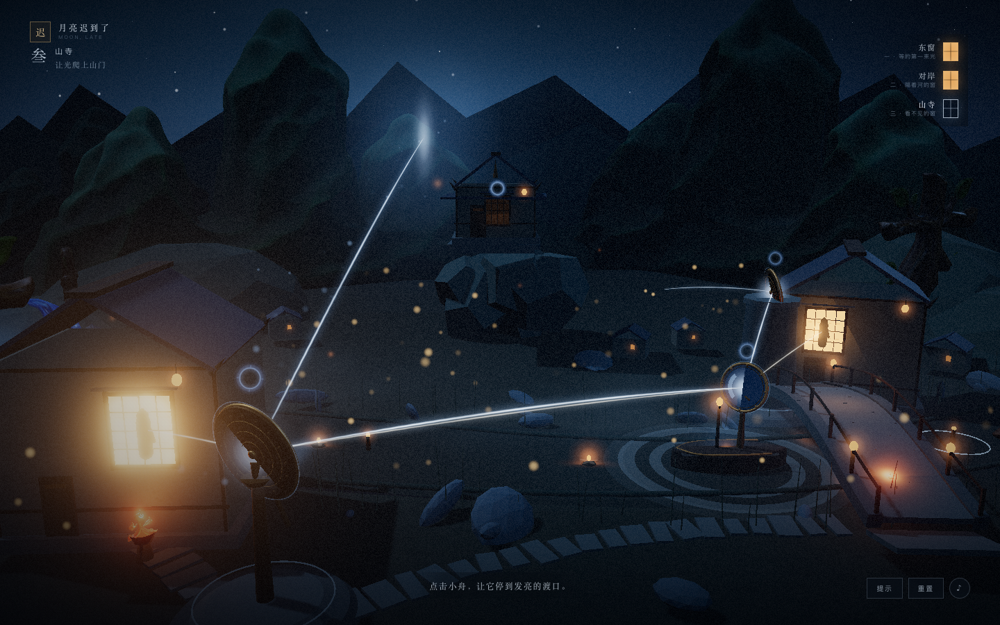
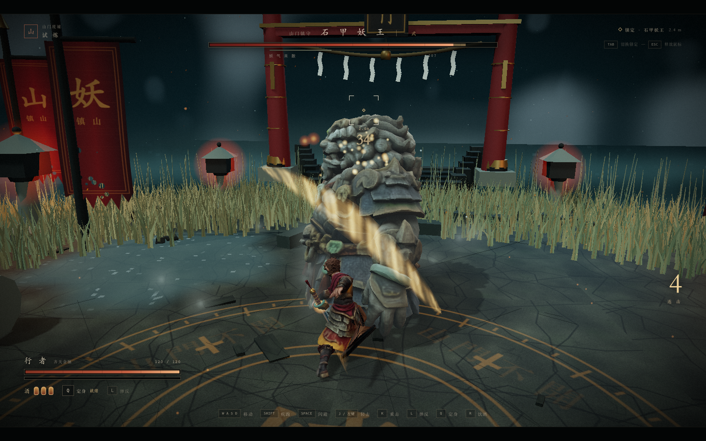

三个原型，
三条创作方向。
先试玩，再选择想继续打磨的作品。它们都是已有原型，可以从各自的 GitHub 分支继续二创。建议使用电脑体验。

备选 · 沉浸演出 · 60–90 秒
将进酒 · 醉界
一场唐代夜宴，饮下每一杯，世界便发生变化。五花马、黄河水幕和翻转宴席适合视觉二创，可为每杯增加互动。

动作游戏 · 西游风格 · 电脑试玩
妖王 · 重制版
在山门废墟中迎战妖王：轻重攻击、闪避、弹反、定身和锁定，已有胜负与再战流程。适合进一步打磨角色、战斗手感与场景。
键盘 WASD 移动，J / 鼠标左键攻击，空格闪避；试玩主要面向电脑。